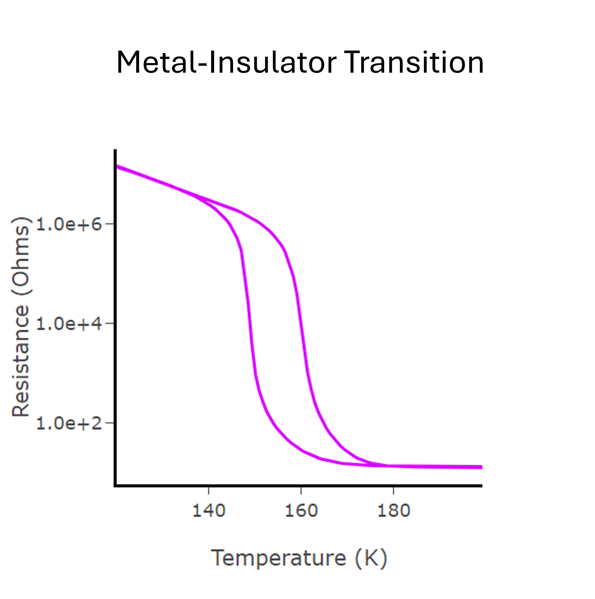
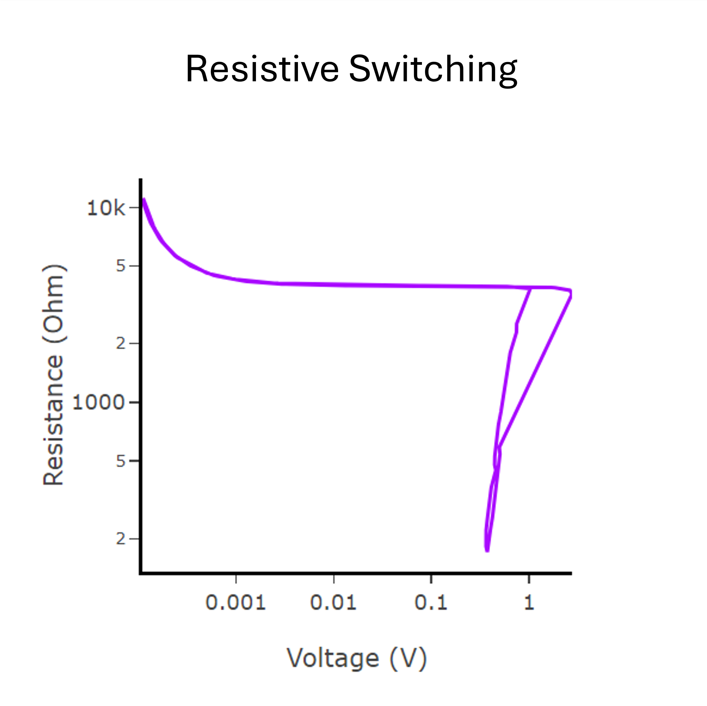

These pages help you to quickly visualize the raw data of the electrical measurements to get valuable insights such as Metal-Insulator Transition and Resistive Switching in the materials. (Click on icons to open the window)

It helps to visualize the resistance vs temperature R(T), the derivative d(log(R))/dT, which is crucial for identifying the transition temperature and activation energy.

This page helps to visualize the resistive switching behavior of memristive devices. A tool for plotting various electrical characteristics, including current-voltage I(V).